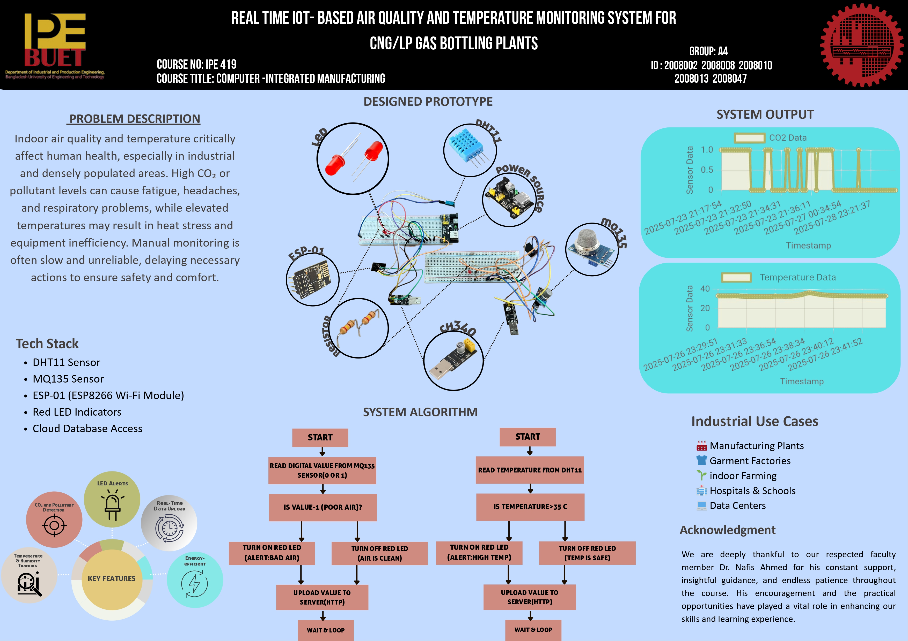

Team Leader: Asif Salman Khan Tanim
Indoor air quality and temperature have a significant impact on human health, especially in industrial and densely populated environments.
Poor air quality, indicated by high concentrations of CO₂ or other pollutants, can cause headaches, fatigue, and long-term respiratory issues.
Likewise, high ambient temperatures can lead to heat stress, equipment inefficiency, or health hazards for workers.
Manual monitoring is inefficient and may delay critical action.
This project automatically monitors temperature and air quality in real time, provides visual alerts with LEDs, and uploads all sensor data online for remote access.
| Device / Component | Quantity | Task / Function |
|---|---|---|
| DHT11 Temperature & Humidity Sensor | 1 | Measures ambient temperature and humidity |
| MQ135 Air Quality Sensor | 1 | Detects CO₂ and other gas pollution |
| ESP-01 (ESP8266) | 1 | Wi-Fi controller for uploading data to cloud/server |
| Red LED | 2 | Lights up if unsafe temperature or poor air quality detected |

#include <ESP8266WiFi.h>
#include <ESP8266HTTPClient.h>
#include <ArduinoJson.h>
const char* ssid = "Sakib";
const char* password = "12332113";
const char* baseUrl = "http://ipe20-buet.top/get_data.php";
const char* groupName = "groupA4";
const char* sensorName = "CO2";
const char* passcode = "passA4";
#define MQ135_DIGITAL_PIN 2
const int ledPin = 2; // GPIO2 also controls LED on ESP-01
WiFiClient client;
void setup() {
Serial.begin(115200);
delay(1000);
Serial.println("\nConnecting to WiFi...");
WiFi.begin(ssid, password);
int retry = 0;
while (WiFi.status() != WL_CONNECTED && retry < 20) {
delay(500); Serial.print(".");
retry++;
}
if (WiFi.status() == WL_CONNECTED) {
Serial.println("\nWiFi connected!");
Serial.print("IP address: ");
Serial.println(WiFi.localIP());
} else {
Serial.println("\nFailed to connect to WiFi.");
}
pinMode(MQ135_DIGITAL_PIN, INPUT);
pinMode(ledPin, OUTPUT);
digitalWrite(ledPin, LOW);
}
void sendToServer(float gas) {
if (WiFi.status() == WL_CONNECTED) {
HTTPClient http;
String url = String(baseUrl) +
"?g=" + groupName +
"&sn=" + sensorName +
"&sd=" + String(gas, 4) +
"&p=" + passcode +
"&format=json";
Serial.println("Sending data: " + url);
http.begin(client, url);
int httpCode = http.GET();
if (httpCode > 0) {
String response = http.getString();
Serial.println("Response: " + response);
} else {
Serial.print("HTTP Error: "); Serial.println(httpCode);
}
http.end();
} else {
Serial.println("WiFi not connected");
}
}
void loop() {
float gas = digitalRead(MQ135_DIGITAL_PIN); // 1 = bad air, 0 = clean
if (gas == 1) {
digitalWrite(ledPin, HIGH);
Serial.println("Gas Detected: LED ON");
} else {
digitalWrite(ledPin, LOW);
Serial.println("Air Clean: LED OFF");
}
Serial.print("Gas Reading (from sensor): "); Serial.println(gas);
sendToServer(gas);
delay(5000);
}
#include <ESP8266WiFi.h>
#include <ESP8266HTTPClient.h>
#include <ArduinoJson.h>
#include <DHT.h>
const char* ssid = "Sakib";
const char* password = "12332113";
const char* baseUrl = "http://ipe20-buet.top/get_data.php";
const char* groupName = "groupA4";
const char* sensorName = "Temperature";
const char* passcode = "passA4";
#define DHTPIN 2
#define LED_PIN 0
#define DHTTYPE DHT11
DHT dht(DHTPIN, DHTTYPE);
WiFiClient client;
float tempThreshold = 35.0;
void setup() {
Serial.begin(115200);
delay(1000);
pinMode(LED_PIN, OUTPUT);
digitalWrite(LED_PIN, LOW);
Serial.println("Connecting to WiFi...");
WiFi.begin(ssid, password);
int retry = 0;
while (WiFi.status() != WL_CONNECTED && retry < 20) {
delay(500); Serial.print(".");
retry++;
}
if (WiFi.status() == WL_CONNECTED) {
Serial.println("\nWiFi connected!");
Serial.print("IP address: "); Serial.println(WiFi.localIP());
} else {
Serial.println("\nFailed to connect to WiFi.");
}
dht.begin();
}
void sendToServer(float temperature, float humidity) {
if (WiFi.status() == WL_CONNECTED) {
HTTPClient http;
String url = String(baseUrl) +
"?g=" + groupName +
"&sn=" + sensorName +
"&sd=" + String(temperature, 2) + "," + String(humidity, 2) +
"&p=" + passcode +
"&format=json";
Serial.println("Sending data: " + url);
http.begin(client, url);
int httpCode = http.GET();
if (httpCode > 0) {
String response = http.getString();
Serial.println("Response: " + response);
} else {
Serial.print("HTTP Error: "); Serial.println(httpCode);
}
http.end();
} else {
Serial.println("WiFi not connected");
}
}
void loop() {
float temperature = dht.readTemperature();
float humidity = dht.readHumidity();
if (isnan(temperature) || isnan(humidity)) {
Serial.println("Failed to read from DHT sensor!");
return;
}
Serial.print("Temperature: "); Serial.print(temperature);
Serial.print(" °C | Humidity: "); Serial.print(humidity); Serial.println(" %");
sendToServer(temperature, humidity);
if (temperature >= tempThreshold) {
digitalWrite(LED_PIN, HIGH);
Serial.println("LED ON (Temperature threshold exceeded)");
} else {
digitalWrite(LED_PIN, LOW);
Serial.println("LED OFF");
}
delay(5000);
}